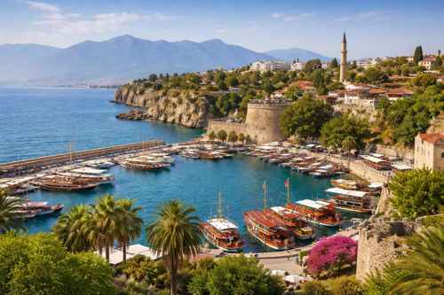

Merhaba,
Ben Azra Sek
Bilgisayar programcılığı öğrencisi. Resim çizmeyi, müzik dinlemeyi ve kitap okumayı severim.
Beni tanıyınHakkımda
Merhaba benim adım AZRA SEK 20 yaşındayım bigsayar programcısı 1. sınıf öğrencisiyim Antalyalıyım 2 yıl mezuna kaldım resim çizmekten, müzik dinlemekten, kitap okumaktan hoşlanırım.
Bu bölüm bana süpriz oldu diyebilirim hiç beklemiyodum daha doğrusu kodlamalarda yeniyim yavaş yavaş öğreniyorum sevmeye başladım bölümümüm bana bir şeyler katacağına inanıyorum ilerdeki hedefim dgs ile bir veri bilimcisi olamak.
Antalya Hakkında
Antalya, Türkiye'nin güney sahilinde yer alan bir şehirdir. Akdeniz'in kıyısında bulunan Antalya, tarihi ve doğal güzellikleri ile ünlüdür. Şehir, antik kalıntıları, plajları, dağları ve turistik bölgeleri ile ziyaretçilere çeşitli deneyimler sunar. Antalya'nın tarihi, Roma, Bizans ve Osmanlı dönemlerine kadar uzanır ve bu nedenle birçok tarihi yapı ve müze bulunmaktadır. Ayrıca, Antalya'nın iklimi genellikle sıcak ve güneşli olup, yaz aylarında turistler için popüler bir destinasyon haline gelmektedir.
